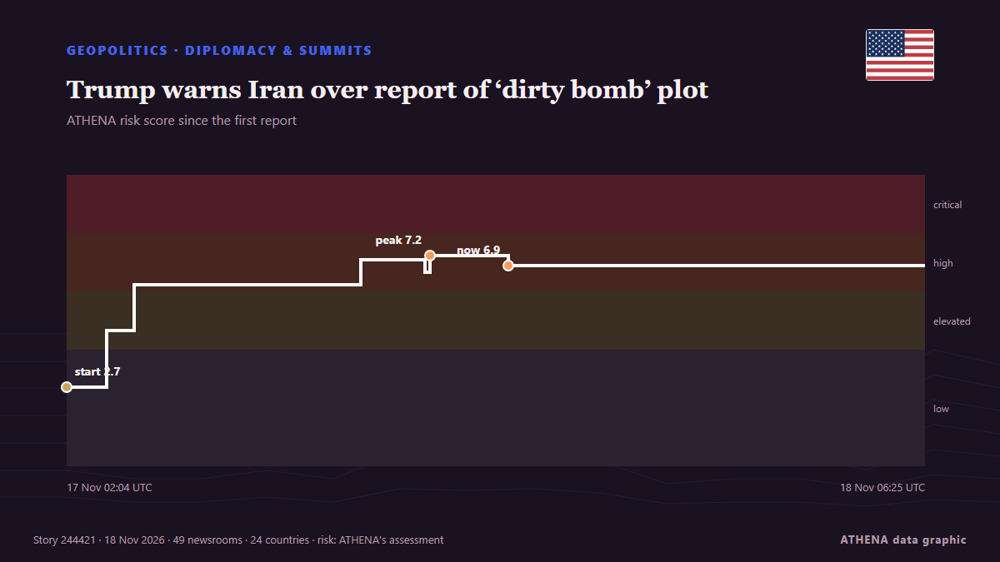

Trump warns Iran over report of ‘dirty bomb’ plot

President Trump warned the Iranian regime after a report that Iran was planning a ‘dirty bomb’ attack in Washington. από NBC News (World)
Αναφέρθηκε ανεξάρτητα από 50 μέσα σε 24 χώρες από τις 16 Νοε, πρώτο το investingLive (ForexLive)· η κάλυψη εξασθενεί. Το ATHENA εκτιμά τον κίνδυνο υψηλό (6.5/10), κυρίως λόγω της σοβαρότητάς του και της εμβέλειάς του. Βεβαιότητα 91% (υψηλή): το επιβεβαιώνουν 50 ανεξάρτητα μέσα, μέση αξιοπιστία 76%. Μέσα ανά χώρα: Ινδία (7), Τουρκία (5), Ηνωμένο Βασίλειο (3). Κάλυψη: 16 Νοε έως 17 Νοε, 25 ώρες.
Γιατί έχει σημασία: Οι εξελίξεις στην ασφάλεια και τη διπλωματία μπορούν να μετατοπίσουν συμμαχίες, εμπόριο και αγορές πολύ πέρα από τις χώρες που εμπλέκονται.
Τι άλλαξε: 43 νέες αναφορές από 36 μέσα στο 24ωρο έως 18 Νοε.
Πρώτη διατύπωση: US intelligence suggests Iran planning 'dirty bomb' attack targeting officials in DC - report
ΑυτοματοποιημένοΕπιλέχθηκε, ομαδοποιήθηκε και βαθμολογήθηκε με τη δημοσιευμένη μέθοδο της ATHENA από 35 ανεξάρτητα μέσα. Ο τίτλος είναι του μέσου· οι προτάσεις της ATHENA ακολουθούν σταθερά πρότυπα - δεν τις γράφει παραγωγική ΤΝ. Πώς λειτουργεί →
Πώς να διαβάσετε αυτή τη σελίδα
- Τι διαβάζετε
- 50 μέσα σε 24 χώρες ανέφεραν αυτό το γεγονός. Οι αναφορές παρακάτω εμφανίζονται με τη σειρά που δημοσιεύτηκαν· κάθε τίτλος ανοίγει το αρχικό άρθρο. Το ATHENA δεν γράφει δικά του ρεπορτάζ.
- Η εκτίμησή μας
- Για την καταγραφή — Οι αναφορές περιγράφουν ένα ολοκληρωμένο, εσωτερικό, εμπορικό ή προσωπικό ζήτημα. Το καταγράφουμε ώστε να βλέπετε ποιος το ανέφερε και πότε. Δεν παρακολουθούμε εδώ κίνδυνο ευρύτερης σύγκρουσης.
- Πόσα στοιχεία υπάρχουν
- Ισχυρή Πολλά ανεξάρτητα μέσα σε πολλές χώρες περιγράφουν το ίδιο γεγονός.
Αφού αφαιρεθούν οι επαναλήψεις, τα άσχετα και τα παλιά στοιχεία, υπολογίζονται 28 από τις 40 αναφορές που παρατίθενται· το 98% των τίτλων αντιστοιχεί στο γεγονός.
- Τι δεν σημαίνει
- Το ATHENA μετρά πώς καλύπτεται ένα γεγονός, όχι αν είναι αληθές. Δεν είναι πρόβλεψη, κρίση για το ποιος έχει δίκιο ή συμβουλή.
- Τι θα την άλλαζε
- Αναφορές από άλλα ανεξάρτητα μέσα που δείχνουν διαφορετική εξέλιξη, ή σαφής επιβεβαίωση ή διάψευση από επίσημη πηγή.
Εκτίμηση R2 · ανανεώνεται με κάθε ενημέρωση της σελίδας. Το ATHENA δεν έχει δημοσιεύσει ακόμη ιστορικό επιδόσεων για αυτές τις εκτιμήσεις· όταν το κάνει, θα συνδέεται εδώ.
Με μια ματιά
Επιλέγεται, βαθμολογείται και γράφεται από τη δημοσιευμένη μεθοδολογία του ATHENA. Κανένας συντάκτης δεν παρεμβαίνει σε μεμονωμένα γεγονότα. Πώς παράγεται ›
| 16 Nov 23:16 UTC | 4 |
|---|---|
| 17 Nov 01:16 UTC | 4 |
| 17 Nov 03:16 UTC | 2 |
| 17 Nov 05:16 UTC | 2 |
| 17 Nov 07:16 UTC | 4 |
| 17 Nov 09:16 UTC | 2 |
| 17 Nov 11:16 UTC | 8 |
| 17 Nov 13:16 UTC | 7 |
| 17 Nov 15:16 UTC | 8 |
| 17 Nov 17:16 UTC | 6 |
| 17 Nov 19:16 UTC | 1 |
| 17 Nov 21:16 UTC | 2 |
| 17 Nov 23:16 UTC | 2 |
| 18 Nov 01:16 UTC | 1 |
| 18 Nov 03:16 UTC | 3 |
| 18 Nov 05:16 UTC | 2 |
| 18 Nov 07:16 UTC | 0 |
| 18 Nov 09:16 UTC | 1 |
| 17 Nov 02:04 UTC | 2.7 |
|---|---|
| 17 Nov 03:23 UTC | 4.7 |
| 17 Nov 04:18 UTC | 6.2 |
| 17 Nov 11:47 UTC | 7.1 |
| 17 Nov 13:54 UTC | 6.7 |
| 17 Nov 14:05 UTC | 7.2 |
| 17 Nov 16:40 UTC | 6.9 |
| 18 Nov 10:13 UTC | 6.5 |
Γιατί αυτοί οι αριθμοί
Σημασία
Κίνδυνος
Βεβαιότητα
Η κάλυψη — ποιος το ανέφερε και πότε
ο τίτλος όπως δημοσιεύτηκε · ανοίγει το πρωτότυπο- investingLive (ForexLive) · INTIran drawing up dirty bomb options for Washington, 7 US officials say, not seen imminent
- Anadolu Agency (English) · ΤουρκίαUS intelligence warns of Iranian dirty bomb or chemical attack plot targeting Trump officials: CNN
- TRT World · ΤουρκίαUS intelligence accuses Iran of planning 'dirty bomb' attack on Washington — report
- Gulf News · Ηνωμένα Αραβικά ΕμιράταReport: US intelligence points to possible Iranian 'dirty bomb' plot in Washington
- Times of India · ΙνδίαIran planning dirty bomb attack in Washington, US intel warns
- Express Tribune · ΠακιστάνUS intelligence warns of Iranian dirty bomb or chemical attack plot targeting Trump officials: CNN
- Livemint · ΙνδίαIran planning ‘dirty bomb’, chemical weapon attack on Trump officials in Washington, warns US intelligence: Report
- The Jerusalem Post · ΙσραήλUS intelligence suggests Iran planning 'dirty bomb' attack targeting officials in DC - report
- Indian Express · ΙνδίαWorld News Live Updates: Quad leaders raise alarm over economic coercion, back free maritime movement
- Kurdistan24 (English) · ΙράκCNN: US Intel Indicates Iran Plans To Target Officials In DC With A Dirty Bomb
- NDTV · ΙνδίαIran Plans To Detonate 'Dirty Bomb' In Washington, Warns US Intel: Report
- Egypt Independent · ΑίγυπτοςExclusive: US intel indicates Iran developing plans to potentially detonate a dirty bomb in Washington, sources say
- Novinite · ΒουλγαρίαUS Intelligence Warns of Possible Iranian Dirty Bomb Plot in Washington
- Arab News · Σαουδική ΑραβίαCNN: US intelligence points to possible Iranian plot targeting Trump officials with a 'dirty bomb'
- Khaama Press · ΑφγανιστάνIran Exploring Dirty Bomb or Chemical Attack on Trump Officials, US Intelligence Warns
- Haaretz (English) · ΙσραήλIran developing plans for 'dirty bomb' or chemical attack in D.C., report says
- Times of India · ΙνδίαFrom Russia-Ukraine war to Iran-US conflict: The return of the 'dirty bomb' threat
- Vanguard · ΝιγηρίαTrump says takes ‘very seriously’ possible Iran threat to Washington
- Asharq Al-Awsat (English) · Σαουδική ΑραβίαTrump Says Takes ‘Very Seriously’ Possible Iran Threat to Washington
- The Independent · Ηνωμένο ΒασίλειοTrump warns Iran would pay price ‘like no country has paid before’ for dirty bomb on DC: Live updates
- Deccan Herald · ΙνδίαTrump says US taking seriously report of possible Iranian dirty bomb plot in Washington
- CNA (Channel NewsAsia) · ΣιγκαπούρηTrump says takes ‘very seriously’ possible Iran threat to Washington
- Free Malaysia Today · ΜαλαισίαTrump says takes ‘very seriously’ possible Iran threat to Washington
- New Straits Times · ΜαλαισίαTrump takes reported Iran dirty bomb threat to Washington 'very seriously'
- TASS (English) · ΡωσίαUS to unleash hell on Tehran if Iran attacks Washington DC — Trump
- TASS (English) · ΡωσίαUS sets stage for ground aggression with dirty bomb claims — Iranian Foreign Ministry
- The Independent · Ηνωμένο ΒασίλειοTrump says US is taking alleged ‘dirty bomb’ threat seriously as Washington DC residents wonder if they are safe
- Al-Monitor · Ηνωμένες ΠολιτείεςTrump says US taking seriously report of possible Iranian dirty bomb plot in Washington
- Global News (World) · ΚαναδάςTrump says Iran would ‘pay a price’ amid report of dirty bomb attack plot
- NDTV World · Ινδία"They Are Crazy": Trump On Reported Iranian 'Dirty Bomb' Plot In Washington
- Forbes Business · Ηνωμένες ΠολιτείεςTrump Said U.S. Is Taking Alleged Iran Dirty Bomb Threat ‘Very Seriously’
- DW English · ΓερμανίαIran dismisses report of alleged 'dirty bomb' attack on Washington
- Bangkok Post — page reader · ΤαϊλάνδηIran dismisses report of ‘dirty bomb’ plot
- Türkiye Today · ΤουρκίαIran calls CNN dirty bomb report 'fabricated' pretext for new attacks
- Türkiye Today · ΤουρκίαTrump warns Iran would 'pay a price' unlike any country if it targets Washington
- Türkiye Today · ΤουρκίαUS fears attacks on Trump officials over Iran's alleged dirty bomb plot: Report
- France 24 English · ΓαλλίαTrump says he takes possible Iran bomb threat to Washington 'very seriously'
- The Guardian · Ηνωμένο ΒασίλειοTrump claims US is ‘looking into’ Iranian bomb plot in Washington despite ‘no credible threats’
- Euronews English · ΓαλλίαTrump warns Iran over allegations of dirty bomb threat to Washington
- NBC News (World) · Ηνωμένες ΠολιτείεςTrump warns Iran over report of ‘dirty bomb’ plot